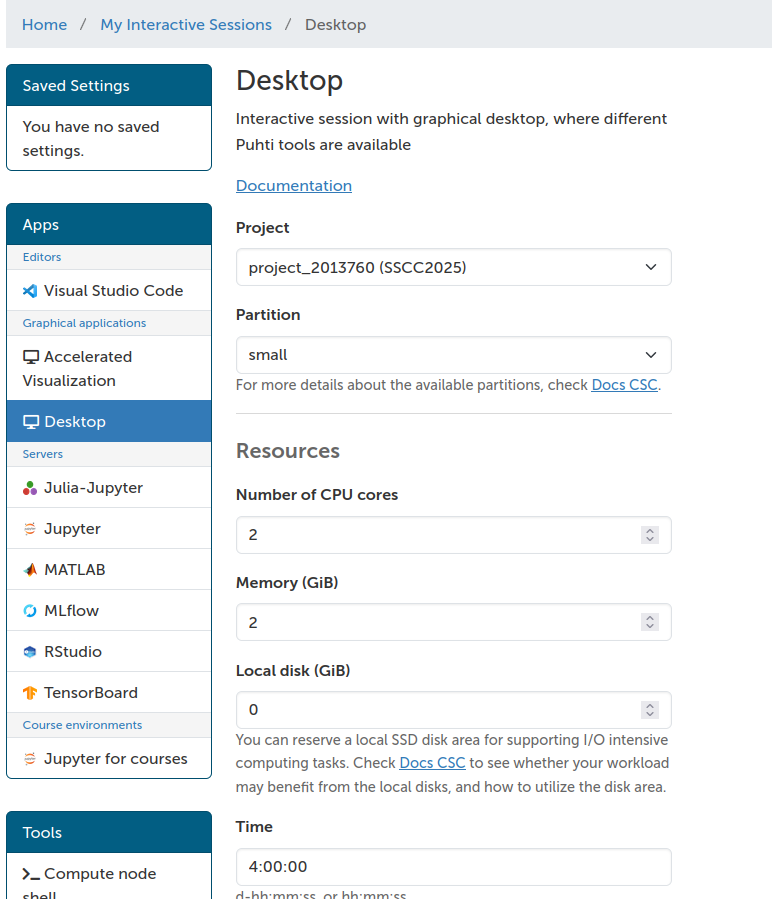
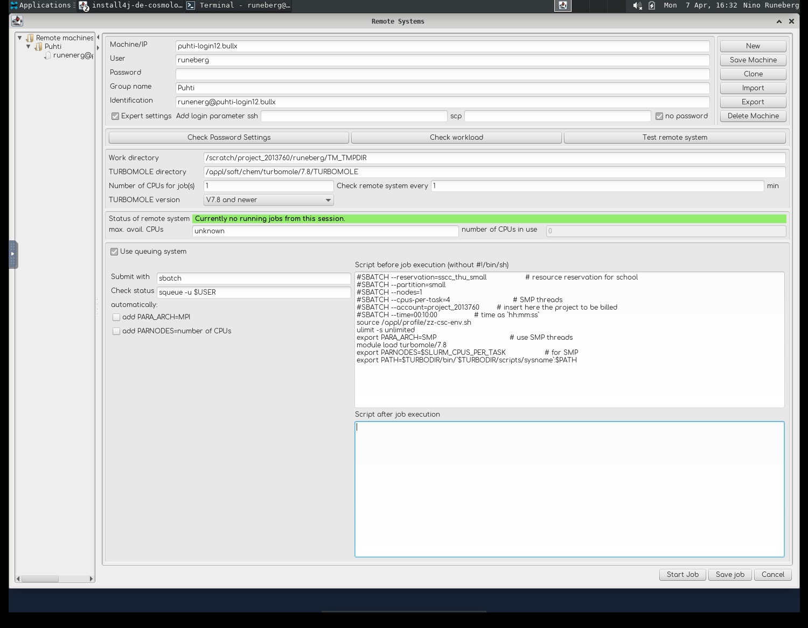

Setup TmoleX
TmoleX is an easy to use graphical user interface to handle TURBOMOLE calculations. TmoleX includes a structure builder and tools for preparing TURBOMOLE jobs and analyzing results. TmoleX can also be used to submit and supervise TURBOMOLE jobs on CSC's supercomputers.
The free TmoleX Client version can be used from your local Windows, Linux, or MacOS desktop to run TURBOMOLE at CSC. It can be freely downloaded (requires registration) from the Dassault Systèmes website. This is a demo version that also includes a restricted version of TURBOMOLE.

Usage
Use via your browser
Go to puhti.csc.fi using a web browser and login using your CSC/Haka user account.
- From there launch a Desktop.
<<<<<<< HEAD

=======

d7ec63a (Update site and fix broken files) * Activate the
Reservation-> sscc_thu_smallthat gives access to resourses specially dedicated for this course * Select the projectproject_2013760(SSCC2025)that is used for this course * Go with the default resourses
* Once resourses have been allocatedLaunch Desktop
2. Open aTerminaland load the TURBOMOLE modulemodule load turbomole/7.8. 3. Start TmoleX with the commandTmoleX24. 4. SelectNew Projectand define a suitable project in theFile Nameslot (e.g./scratch/project_2013760/<your-username>/qc_tutorial1). In the menuExtras->Preferences->Generalyou can set theUser directoryto point to you present directory/scratch/project_2013760/<your-username>5. Define your system and type of calculation. 6. Small jobs can be run interactively: Start Job -> Run (local) 7. Larger jobs should be run as batch jobs: Start Job -> Run (network).
Prepare for batch jobs
Smaller jobs can be run directly (Run (local)), but for larger jobs we should reserve
resourses via the queuing system.
<<<<<<< HEAD
- In
Extras->Remote Systems->Add new Machine - The Machine is called
puhti-login12.bullx -
User is your CSC username, Group name and Identification are just tags you can seti however you like

-
In
Extras->Remote Systems->Add new Machine - The Machine is called
puhti-login12.bullx Useris your CSC username,Group nameandIdentificationare just tags you can set to distinguish different configurationsd7ec63a (Update site and fix broken files)
- Tick
Expert settingsandno password. - Work directory is a place where temporary files are stored:
/scratch/project_2013760/
/TM_TMPDIR -
TURBOMOLE directory should point to were it is installed: /appl/soft/chem/turbomole/7.8/TURBOMOLE
-
Tick
Use queuing system - Submit with
sbatchand Check status withsqueue -u $USER - Untick
add PARA_ARCHandadd PARNODES - In the field "Script before job execution" add:
#SBATCH --reservation=sscc_thu_small # resource reservation for school
#SBATCH --partition=small # queue
#SBATCH --nodes=1 # for SMP only 1 is possible
#SBATCH --cpus-per-task=4 # SMP threads
#SBATCH --account=project_2013760 # insert here the project to be billed
#SBATCH --time=00:30:00 # time as `hh:mm:ss`
source /appl/profile/zz-csc-env.sh
ulimit -s unlimited
export PARA_ARCH=SMP # use SMP threads
module load turbomole/7.8
export PARNODES=$SLURM_CPUS_PER_TASK # for SMP
export PATH=$TURBODIR/bin/`$TURBODIR/scripts/sysname`:$PATH
- Remember to save save the settings using
Save Machine.
Install your own TmoleX
Install the TmoleX client on your local workstation. For details, see the registration and download page at Dassault Systèmes website. With your version of TmoleX you can build your actual job locally and then submit the job to Puhti. With the client you can monitor how the job proceeds. When the job has completed you can retrieve the output and use your local client to analyze the results.